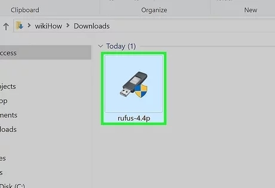
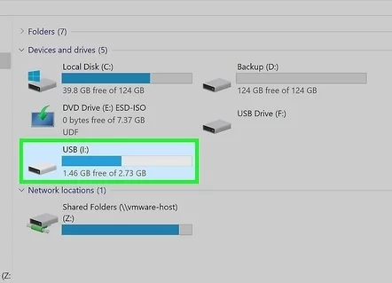
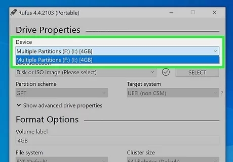
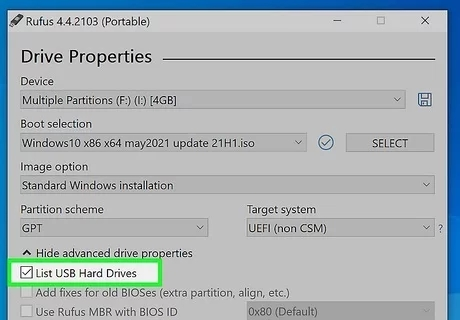
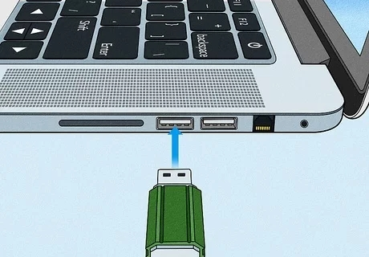

💾 Rufus Deployment Center
Laboratory Installation & Configuration Documentation
You can download Rufus at rufus.ie. Click one of the download links below the “Download” header. Be sure to download the correct version for your system's processor (i.e., 64-bit, 32-bit, ARM64).
To find out your system architecture, click the Windows Start icon and then click the Settings icon. Click System followed by About. Check your system architecture next to "System Type."
Rufus is only available for Windows. It is not available for Mac or Linux.

By default, your downloaded files can be found in your Downloads folder. Double-click Rufus to launch the application when the download is complete. No additional installation steps are necessary.

You can insert it in any free USB port on your PC. You'll need a USB drive that is big enough to hold the ".ISO" file you want to write to the USB drive.
Most modern operating systems require a USB drive with at least 4 GB of hard drive space. You should get a USB drive with 8 GB or more of hard drive space.
Rufus will format and erase all data from your USB drive. Transfer any personal files stored on the USB drive to your computer before using Rufus.
Make sure you are using a USB-A type flash drive. Many computers can’t boot from a USB-C type flash drive.

When you insert a USB drive, Rufus will usually detect it automatically. If needed, select your USB drive using the "Device" drop-down menu.
In most cases, your USB drive will be listed as “No_Label.”

It's the button on the right-hand side. This opens a file browser that you can use to select an ISO image.
Alternatively, if you want to download a Windows ISO file, click the arrow pointing down next to the "Select" button and select DOWNLOAD. Then, click the DOWNLOAD button. Use the drop-down menu to select the version of Windows you want to download and click Continue.

Navigate to where you downloaded the ISO file you want to write to the USB drive, select it, and click Open.
In most cases, you will want to leave the "Partition Scheme," "Target System," and "Image Option" as the default. Rufus can detect these settings automatically.
You can download the Linux Ubuntu ISO file from ubuntu.com/download.

If you want to give your USB drive a name, enter it in the "Volume Label" field. Otherwise, leave it as is.

It's at the bottom in the lower-right corner. This will start writing the ISO file for Rufus. This may take several minutes.
You may receive a message warning you that any data on the USB drive will be destroyed. This is normal. Click OK to continue.
Do not remove your USB drive until the process is complete.


Place a check mark next to “List USB Hard Drives.” Some USB drives may not be compatible with Rufus. Click the arrow icon next to "Show advanced drive properties" and click the checkbox next to "List USB Hard Drives."
Try running Rufus as an administrator. If you get an error message that says the creation failed or that Rufus cannot make the USB bootable, try running Rufus as an administrator. To do so, right-click the Rufus launch file and click Run as administrator.
Try using a different USB port. If your computer is having a hard time detecting or reading your USB drive, try plugging it into a different port. There may be a problem with the port you are using.

Try using another USB flash drive. If you receive an error message that says the USB drive doesn't have enough space or that it has no media on it, you will need to use another USB drive. If it’s an older USB drive, it may not work as well as it once did.
Try formatting the USB drive before using Rufus. If you are having issues writing an ISO file to a USB drive, try formatting the USB drive in Windows before using Rufus. To do so, right-click the USB drive in File Explorer and click Format. Choose NTFS, exFAT, or FAT32 as the file system, and then click Start.
Choose the correct partition scheme. If you are using an older computer, you may need to choose MBR as the partition scheme. For computers that run newer UEFI hardware, select GPT.

Try re-enabling automounting on your computer. If you receive the message, “Error: [0x00000015] The device is not ready,” you may have previously disabled automounting. Use the following steps to re-enable it.
- Type “cmd” into the search box in Start or Windows Explorer.
- Right-click cmd.exe, then select Run as administrator.
- Type “mountvol /e” into the dialog box, then press Enter.
- Close the command prompt window, then try using Rufus again.
Download a fresh copy of the ISO file. If there is a problem writing the ISO file to a USB drive, the ISO file may be corrupt. Try downloading a fresh copy of it. Make sure you download it from an official source.

Change your PC's boot order. To boot from a USB drive, you will need to boot into your computer's BIOS and set the boot order to boot from a USB drive before your hard drive.
Switch ports for older legacy hardware. If your PC is having trouble booting from the USB drive, try switching to a different USB 2.0 port. Some older PCs may have issues with USB 3.0 or higher.